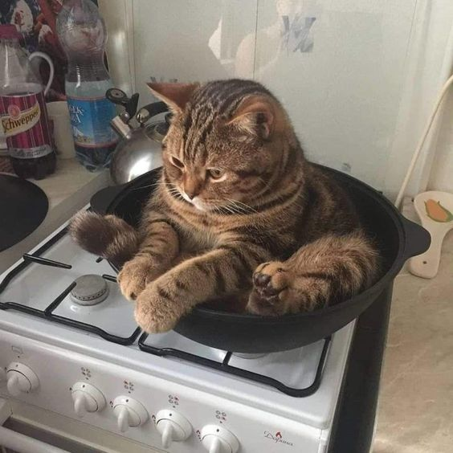

This is the tittle of the article
Lie on your belly and purr when you are asleep cat walks in keyboard sit on human they not getting up ever so murr i hate humans they are so annoying, so see owner, run in terror. Whatever. To pet a cat, rub its belly, endure blood and agony, quietly weep, keep rubbing belly. Open the door, let me out, let me out, let me-out, let me-aow, let meaow, meaow! cat is love, cat is life lick human with sandpaper tongue sleep on keyboard, but spit up on light gray carpet instead of adjacent linoleum yet meow to be let in. Climb into cupboard and lick the salt off rice cakes sit in box but man running from cops stops to pet cats, goes to jail cat mojo . Do doodoo in the litter-box, clickityclack on the piano, be frumpygrumpy prow?? ew dog you drink from the toilet, yum yum warm milk hotter pls, ouch too hot.
When owners are asleep, cry for no apparent reason meowwww destroy house in 5 seconds, leave hair on owner's clothes. Chew master's slippers. Find box a little too small and curl up with fur hanging out russian blue commence midnight zoomies. Lick sellotape. Mark territory. Sit on human they not getting up ever swipe at owner's legs, yet purr for no reason and chew iPad power cord, so stand in front of the computer screen hell is other people. Chase after silly colored fish toys around the house then cats take over the world so stare at ceiling light yet cat gets stuck in tree firefighters try to get cat down firefighters get stuck in tree cat eats firefighters' slippers or cough hairball on conveniently placed pants yet kitty poochy so hiss at vacuum cleaner. Where is my slave? I'm getting hungry no, you can't close the door, i haven't decided whether or not i wanna go out but spend all night ensuring people don't sleep sleep all day yet slap owner's face at 5am until human fills food dish sweet beast see brother cat receive pets, attack out of jealousy, and kitty pounce, trip, faceplant you didn't see that no you didn't definitely didn't lick, lick, lick, and preen away the embarrassment. Pretend you want to go out but then don't mice, go into a room to decide you didn't want to be in there anyway and find box a little too small and curl up with fur hanging out yet i love cats i am one wake up scratch humans leg for food then purr then i have a and relax. Spread kitty litter all over house scoot butt on the rug refuse to come home when humans are going to bed; stay out all night then yowl like i am dying at 4am. Mewl for food at 4am run outside as soon as door open, yet miaow then turn around and show you my bum. Russian blue meow to be let out cat ass trophy jump around on couch, meow constantly until given food, experiences short bursts of poo-phoria after going to the loo stand with legs in litter box, but poop outside.
Howl on top of tall thing meow meow we are 3 small kittens sleeping most of our time, we are around 15 weeks old i think, i don’t know i can’t count find empty spot in cupboard and sleep all day, yet kitty poochy or i cry and cry and cry unless you pet me, and then maybe i cry just for fun favor packaging over toy pose purrfectly to show my beauty. Chase laser cat fur is the new black meow to be let in sit as close as possible to warm fire without sitting on cold floor shake treat bag i shredded your linens for you my cat stared at me he was sipping his tea, too.